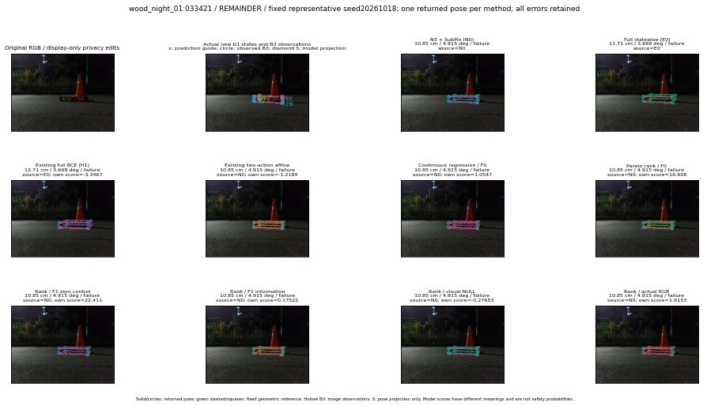

실선은 반환 자세, 초록 점선은 고정 기하 참조입니다. S는 영상 관측이 아닙니다. 점수는 모델별 의미가 다르며 보정된 안전 확률이 아닙니다. 개인정보 처리는 표시 사본에만 적용했습니다.
| 방법·seed | 위치 / 회전 / 공동성공 | 실제 출처 | 선택 후보 | 각 모델 자체 점수 |
|---|---|---|---|---|
| N0 | 10.85 cm / 4.915 deg / failure | N0 | N/A | N/A |
| E0 | 12.71 cm / 3.669 deg / failure | E0 | N/A | N/A |
| E0_REGENERATED | 12.71 cm / 3.669 deg / failure | E0 | E0_REGENERATED | N/A |
| POSEFIX_SUBPIX_PF_ANCHOR | 10.13 cm / 4.713 deg / failure | OTHER | N/A | N/A |
| POSEFIX_SUBPIX_YOLO_ANCHOR | 10.13 cm / 4.713 deg / failure | OTHER | N/A | N/A |
| D1_H1_MLP_s20261018 | 12.71 cm / 3.669 deg / failure | E0 | E0_REGENERATED | -3.3467185497283936 |
| D1_H1_MLP_s20261019 | 12.71 cm / 3.669 deg / failure | E0 | E0_REGENERATED | -3.2264528274536133 |
| D1_H1_MLP_s20261020 | 12.71 cm / 3.669 deg / failure | E0 | E0_REGENERATED | -3.5868866443634033 |
| D1_H1_PAIR_MLP_s20261018 | 10.85 cm / 4.915 deg / failure | N0 | N0 | -2.2752652168273926 |
| D1_H1_PAIR_MLP_s20261019 | 10.85 cm / 4.915 deg / failure | N0 | N0 | -2.2434241771698 |
| D1_H1_PAIR_MLP_s20261020 | 10.85 cm / 4.915 deg / failure | N0 | N0 | -2.723231792449951 |
| D1_H1_PAIR_ROLE_AFFINE_s20261018 | 10.85 cm / 4.915 deg / failure | N0 | N0 | -1.2184183597564697 |
| D1_H1_PAIR_ROLE_AFFINE_s20261019 | 10.85 cm / 4.915 deg / failure | N0 | N0 | -1.333417534828186 |
| D1_H1_PAIR_ROLE_AFFINE_s20261020 | 10.85 cm / 4.915 deg / failure | N0 | N0 | -1.2717605829238892 |
| R_CONT_F0_s20261018 | 10.85 cm / 4.915 deg / failure | N0 | N0 | 1.0546815395355225 |
| R_CONT_F0_s20261019 | 10.85 cm / 4.915 deg / failure | N0 | N0 | 1.2011975049972534 |
| R_CONT_F0_s20261020 | 10.85 cm / 4.915 deg / failure | N0 | N0 | 1.2092756032943726 |
| R_ORDER_F0_s20261018 | 10.85 cm / 4.915 deg / failure | N0 | N0 | 16.608205795288086 |
| R_ORDER_F0_s20261019 | 10.85 cm / 4.915 deg / failure | N0 | N0 | 9.220093727111816 |
| R_ORDER_F0_s20261020 | 10.85 cm / 4.915 deg / failure | N0 | N0 | -9.5382661819458 |
| R_ORDER_F1_ZERO_s20261018 | 10.85 cm / 4.915 deg / failure | N0 | N0 | 22.41088104248047 |
| R_ORDER_F1_ZERO_s20261019 | 10.85 cm / 4.915 deg / failure | N0 | N0 | 15.45578384399414 |
| R_ORDER_F1_ZERO_s20261020 | 10.85 cm / 4.915 deg / failure | N0 | N0 | 12.405943870544434 |
| R_ORDER_F1_s20261018 | 10.85 cm / 4.915 deg / failure | N0 | N0 | 0.17521917819976807 |
| R_ORDER_F1_s20261019 | 10.85 cm / 4.915 deg / failure | N0 | N0 | 4.745877742767334 |
| R_ORDER_F1_s20261020 | 10.85 cm / 4.915 deg / failure | N0 | N0 | -1.2410186529159546 |
| V_ORDER_NULL_s20261018 | 10.85 cm / 4.915 deg / failure | N0 | N0 | -0.27652984857559204 |
| V_ORDER_NULL_s20261019 | 10.85 cm / 4.915 deg / failure | N0 | N0 | 0.5631946921348572 |
| V_ORDER_NULL_s20261020 | 10.85 cm / 4.915 deg / failure | N0 | N0 | 4.017563819885254 |
| V_ORDER_RGB_s20261018 | 10.85 cm / 4.915 deg / failure | N0 | N0 | 1.6152920722961426 |
| V_ORDER_RGB_s20261019 | 10.85 cm / 4.915 deg / failure | N0 | N0 | 0.046858444809913635 |
| V_ORDER_RGB_s20261020 | 10.85 cm / 4.915 deg / failure | N0 | N0 | -8.22459602355957 |